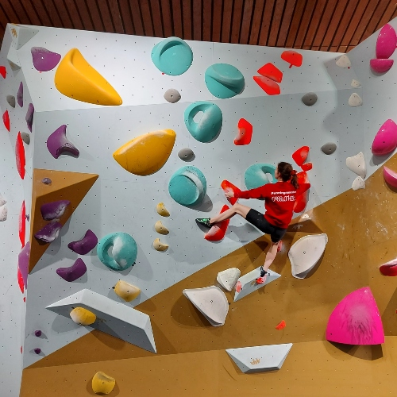
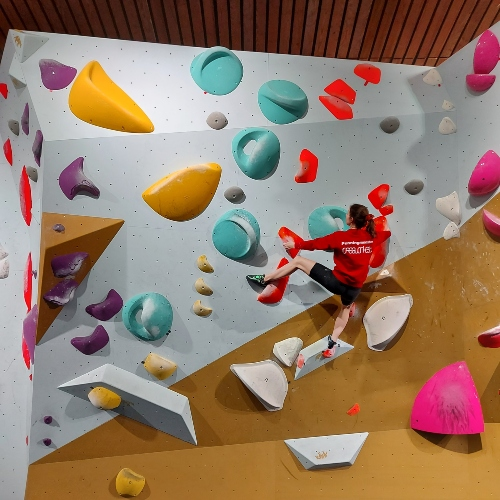

Cards

Lead Climbing
Bouldering

Top Rope

Equipment
Lead Climbing
Bouldering
Top Rope
Equipment
Bouldering is a style of rock climbing that involves climbing relatively short routes, known as boulder problems, without the use of ropes or harnesses. Bouldering is typically done on large boulders or low rock formations, and the climbs can range from a few moves to multiple sequences.
Here are the basic steps for bouldering:
1. Find a boulder or rock formation that is suitable for bouldering. These should be relatively low to the ground, and have a variety of holds that you can use for climbing.
2. Put on your climbing shoes and chalk your hands to improve your grip.
3.Identify a boulder route that you want to attempt. Boulder routes are usually marked with colored tape, and may have a designated start and finish.
4. Begin climbing the route, using only the holds that are designated for the climb. The goal is to reach the top of the boulder without falling.
5. If you fall, land on the crash pad or mats that you or your climbing partners have set up to cushion your fall.
6. Keep trying the route until you successfully complete it, or move on to another route if you get stuck.
Bouldering can be a fun and challenging way to improve your climbing skills, as it requires a combination of strength, technique, and problem-solving skills. However, it's important to learn proper safety techniques and to always climb within your ability level to avoid injury.
Learn more